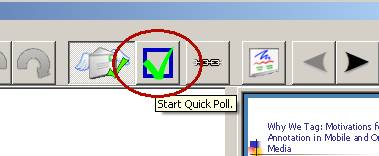
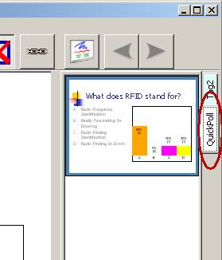
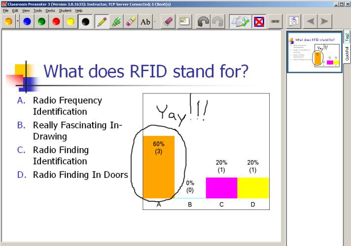
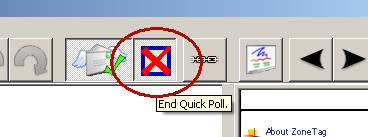
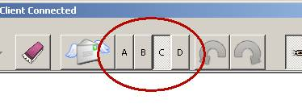

Quick Polling |
|||||
|
GeneralClassroom Presenter's quick polling feature allows an instructor to give students a multiple choice question and allows each student to easily select the appropriate response to the question. The instructor is then given a new slide in a new slide deck (called "QuickPoll") containing the original slide content and a histogram of the responses selected by the students. In order to use quick polling you need to have network connectivity (wired or wireless) and students need to have machines running WindowsXP or Vista with Presenter installed. See Starting Classroom Presenter for how to connect student devices to the instructor's presentation. You will need to start the instructor in networked mode and start individual student machines in the student role. Student devices connected to the instructor's presentation will receive the instructor's ink and slide transition actions in real time. Students may also annotate their local copy of the slides with their own ink or text notes. Instructor1. [Optional] Selecting the Quick Poll Style: There are several types of multiple choice question types currently supported. To change the type of quick poll to perform select one of the options under the menu Tools->Poll Type. Classroom Presenter 3 currently supports the following types of quick polls:
2. Starting the Quick Poll: To begin a new quick poll the instructor should begin by navigating to the slide containing the multiple choice question that he/she wants to ask. The instructor then simply clicks on the Start Quick Poll button on the toolbar to begin the poll. A quick poll can be performed while on any slide in any deck. The Start Quick Poll button: 3. Previewing the Results: Once the first quick poll is started a new slide is appended to a Quick Poll deck on the instructor's machine. This slide contains all of the content from the original slide and also contains a histogram that aggregates the results of the poll. Slides in the quick poll deck can be accessed on the instructor's machine similar to slides in other slide decks. The instructor can preview quick poll results by previewing the slide associated with that quick poll (without displaying it to the class). He/she can also selectively display quick poll results to the class, and annotate them just like any other slide (as seen below in black ink). The histogram shows the percentage of students that chose each choice (out of the total number of students who responded). Each column is also labeled with both percentage and number of respondents who selected that choice. This histogram is updated in real time so that as students change their answers the histogram reflects this change. Finally, quick poll slides are only created on the instructor's machine (and not sent to other student devices) and thus can only be viewed on the instructor's machine or displayed on a public display. 4. Ending the Quick Poll: When the instructor is satisfied that he/she has enough answers for the poll, the instructor can end the quick poll by selecting the End Quick Poll toolbar button. NOTE: Once the poll has been ended there is no way to resume it. The slide containing the results from the quick poll will remain in the quick poll deck until the end of the session and the quick poll deck can be saved like any other deck in Classroom Presenter. Pressing the Start Quick Poll button again will begin a new quick poll and append a new slide to the Quick Poll deck. The End Quick Poll button: StudentAfter an instructor has begun a quick poll, the student's toolbar will contain a set of buttons corresponding to the choices for the poll. At first all of the buttons are un-pressed. The student can then select his/her choice by pressing the appropriate button. Students can change their selection by simply pressing a different choice. Their updated selection will be reflected on the instructor's result slide. Quick poll selections are only sent to the instructor's machine (not to other student devices) and thus can only be viewed in aggregated form on the instructor's machine and public display. |
||||